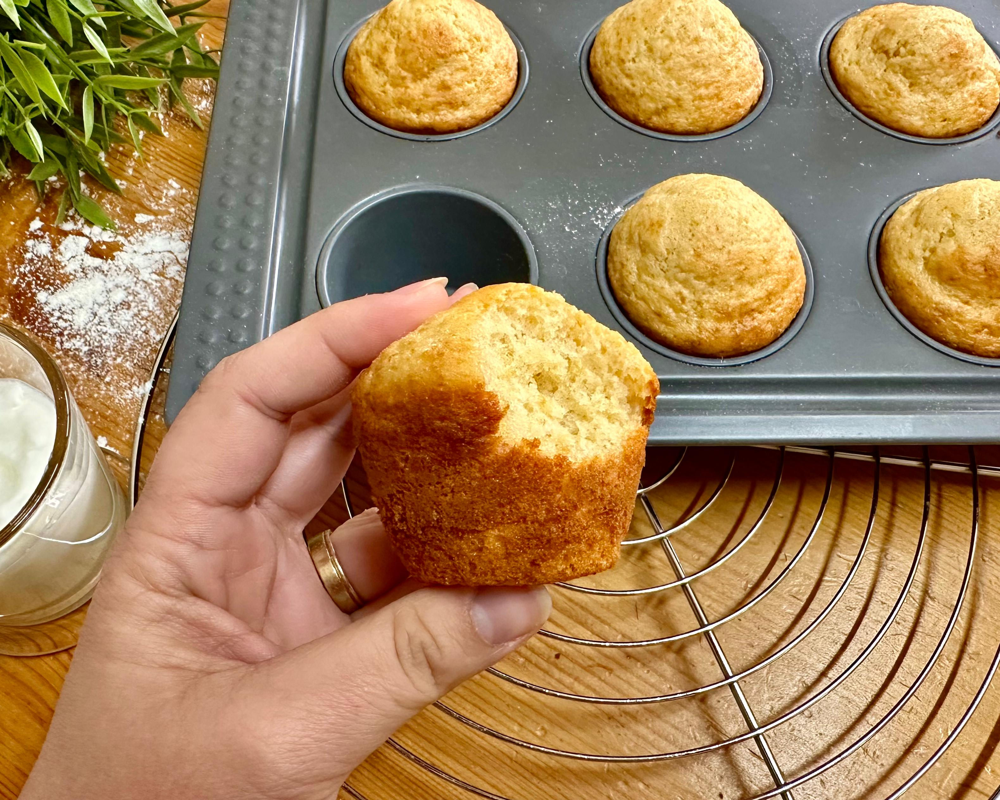

Bolo de iogurte da Luiza

Ingredientes
- 3 ovos
- 80 g de açúcar
- 1 pote de iogurte natural (125 g)
- 20 g de óleo de coco ou manteiga
- 200 g de farinha de trigo
- 30 g de farinha de aveia
- 1 colher (sopa) de fermento
Modo de preparo
- Bater ligeiramente os ovos.
- Acrescentar o açúcar e bater bem.
- Adicionar o iogurte e o óleo de coco.
- Acrescentar as farinhas e o fermento e misturar até ficar homogêneo.
- Assar a 180º C por 35 minutos.